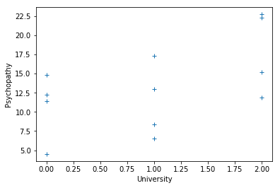
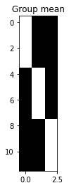
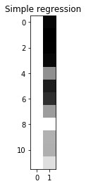

General linear model and F tests
See also: https://bic-berkeley.github.io/psych-214-fall-2016/hypothesis_tests.html
import numpy as np # The array library
import numpy.linalg as npl # The linear algebra sub-package
# Only show 4 decimals when printing
np.set_printoptions(precision=6)
import matplotlib.pyplot as plt
%matplotlib inline
The problem, again
These two lists of numbers are from the GLM intro notebook:
psychopathy = [11.416, 4.514, 12.204, 14.835,
8.416, 6.563, 17.343, 13.02,
15.19 , 11.902, 22.721, 22.324]
clammy = [0.389, 0.2 , 0.241, 0.463,
4.585, 1.097, 1.642, 4.972,
7.957, 5.585, 5.527, 6.964]
Let’s first check what R gives us for this simple regression model (you will need R installed for this):
# This is code to copy-paste into R
psychopathy <- c(11.416, 4.514, 12.204, 14.835, 8.416, 6.563, 17.343,
13.02, 15.19 , 11.902, 22.721, 22.324)
clammy = c(0.389, 0.2 , 0.241, 0.463, 4.585, 1.097, 1.642, 4.972,
7.957, 5.585, 5.527, 6.964)
simple_regression = lm(psychopathy ~ clammy)
print(summary(simple_regression))
Here are the utilities to show the design matrix graphically, from the GLM intro:
def scale_design_mtx(X):
"""utility to scale the design matrix for display
This scales the columns to their own range so we can see the variations
across the column for all the columns, regardless of the scaling of the
column.
"""
mi, ma = X.min(axis=0), X.max(axis=0)
# Vector that is True for columns where values are not
# all almost equal to each other
col_neq = (ma - mi) > 1.e-8
Xs = np.ones_like(X)
# Leave columns with same value throughout with 1s
# Scale other columns to min, max in column
mi = mi[col_neq]
ma = ma[col_neq]
Xs[:,col_neq] = (X[:,col_neq] - mi)/(ma - mi)
return Xs
def show_design(X, design_title):
""" Show the design matrix nicely """
plt.imshow(scale_design_mtx(X),
interpolation='nearest',
cmap='gray') # Gray colormap
plt.title(design_title)
Remember, the first four students were from Berkeley, the second group of four were from Stanford, and the third group were from MIT.
university = [0, 0, 0, 0, 1, 1, 1, 1, 2, 2, 2, 2]
plt.plot(university, psychopathy, '+')
plt.xlabel('University')
plt.ylabel('Psychopathy')
Text(0, 0.5, 'Psychopathy')

The F test needs a full model and a reduced model. Call the full model $\Xmat_f$ and the reduced model $\Xmat_r$. The formula for the F test is:
where $\nu_1$ is called the numerator degrees of freedom, and $\nu_2$ is the denominator degrees of freedom or the degrees of freedom of the error.
$\nu_2$ is also the degrees of freedom for the full model. $\nu_1$ is given by $d - \nu_2$ where $d$ is the degrees of freedom from the reduced model.
First, let’s see what R does:
# R script for one-way ANOVA F test
psychopathy <- c(11.416, 4.514, 12.204, 14.835, 8.416, 6.563, 17.343,
13.02, 15.19 , 11.902, 22.721, 22.324)
university <- factor(c(rep('Berkeley', 4),
rep('Stanford', 4),
rep('MIT', 4)))
one_way_anova = lm(psychopathy ~ university)
print(summary(one_way_anova))
And now, an F test, the traditional way.
This is the standard F test you may be used to, for a one-way analysis of variance.
The reduced model is a model that just has the mean for all the observations, independent of group (university).
The full model allows each group (university) to have its own mean. The F test looks at the reduction in variance when we include the group means into the model.
overall_mean = np.mean(psychopathy)
overall_mean
13.370666666666667
overall_mean_corrected = psychopathy - overall_mean
overall_mean_corrected
array([-1.954667, -8.856667, -1.166667, 1.464333, -4.954667, -6.807667,
3.972333, -0.350667, 1.819333, -1.468667, 9.350333, 8.953333])
# What do you think this will be?
np.mean(overall_mean_corrected)
0.0
berkeley_mean = np.mean(psychopathy[:4])
stanford_mean = np.mean(psychopathy[4:8])
mit_mean = np.mean(psychopathy[8:])
berkeley_mean, stanford_mean, mit_mean
(10.74225, 11.3355, 18.03425)
# Subtract the matching group mean from each row
group_mean_corrected = np.array(psychopathy).copy()
group_mean_corrected[:4] = group_mean_corrected[:4] - berkeley_mean
group_mean_corrected[4:8] = group_mean_corrected[4:8] - stanford_mean
group_mean_corrected[8:] = group_mean_corrected[8:] - mit_mean
group_mean_corrected
array([ 0.67375, -6.22825, 1.46175, 4.09275, -2.9195 , -4.7725 ,
6.0075 , 1.6845 , -2.84425, -6.13225, 4.68675, 4.28975])
SSR_full = np.sum(group_mean_corrected ** 2)
SSR_reduced = np.sum(overall_mean_corrected ** 2)
SSR_full, SSR_reduced
(214.42201450000005, 345.6199626666667)
N = len(psychopathy)
df_error = N - 3
df_extra = 3 - 1
F_top = (SSR_reduced - SSR_full) / df_extra
F_bottom = SSR_full / df_error
F_stat = F_top / F_bottom
F_stat
2.75340555925054
# Back to the old model
X_full = np.zeros((N, 3))
X_full[:4, 0] = 1 # Berkeley indicator is first column
X_full[4:8, 1] = 1 # Stanford indicator is second column
X_full[8:, 2] = 1 # MIT indicator is third column
show_design(X_full, 'Group mean')
X_full
array([[1., 0., 0.],
[1., 0., 0.],
[1., 0., 0.],
[1., 0., 0.],
[0., 1., 0.],
[0., 1., 0.],
[0., 1., 0.],
[0., 1., 0.],
[0., 0., 1.],
[0., 0., 1.],
[0., 0., 1.],
[0., 0., 1.]])

X_full
array([[1., 0., 0.],
[1., 0., 0.],
[1., 0., 0.],
[1., 0., 0.],
[0., 1., 0.],
[0., 1., 0.],
[0., 1., 0.],
[0., 1., 0.],
[0., 0., 1.],
[0., 0., 1.],
[0., 0., 1.],
[0., 0., 1.]])
B_full = npl.pinv(X_full).dot(psychopathy)
B_full
array([10.74225, 11.3355 , 18.03425])
full_fitted = X_full.dot(B_full)
full_residuals = psychopathy - full_fitted
full_residuals
array([ 0.67375, -6.22825, 1.46175, 4.09275, -2.9195 , -4.7725 ,
6.0075 , 1.6845 , -2.84425, -6.13225, 4.68675, 4.28975])
# The reduced design - the overall mean
X_reduced = np.ones((N, 1))
X_reduced
array([[1.],
[1.],
[1.],
[1.],
[1.],
[1.],
[1.],
[1.],
[1.],
[1.],
[1.],
[1.]])
B_reduced = npl.pinv(X_reduced).dot(psychopathy)
B_reduced
array([13.370667])
reduced_fitted = X_reduced.dot(B_reduced)
reduced_residuals = psychopathy - reduced_fitted
reduced_residuals
array([-1.954667, -8.856667, -1.166667, 1.464333, -4.954667, -6.807667,
3.972333, -0.350667, 1.819333, -1.468667, 9.350333, 8.953333])
GLM_SSR_full = np.sum(full_residuals ** 2)
GLM_SSR_reduced = np.sum(reduced_residuals ** 2)
GLM_SSR_full, GLM_SSR_reduced
(214.42201450000005, 345.61996266666665)
OK - now the same thing with the original clammy model:
X_regression_full = np.column_stack((np.ones(12), clammy))
show_design(X_regression_full, 'Simple regression')

B_regression_full = npl.pinv(X_regression_full).dot(psychopathy)
B_regression_full
array([10.071286, 0.999257])
fitted_regression_full = X_regression_full.dot(B_regression_full)
residuals_regression_full = psychopathy - fitted_regression_full
residuals_regression_full
array([ 0.956003, -5.757137, 1.891893, 4.301058, -6.23688 , -4.604471,
5.630934, -2.019593, -2.832376, -3.750137, 7.126819, 5.293887])
fitted_regression_full
array([10.459997, 10.271137, 10.312107, 10.533942, 14.65288 , 11.167471,
11.712066, 15.039593, 18.022376, 15.652137, 15.594181, 17.030113])
10.071286 * 1 + 0.999257 * np.array(clammy)
array([10.459997, 10.271137, 10.312107, 10.533942, 14.652879, 11.167471,
11.712066, 15.039592, 18.022374, 15.652136, 15.594179, 17.030112])
SSR_regression_full = np.sum(residuals_regression_full ** 2)
F_top = (SSR_reduced - SSR_regression_full) / 1
F_bottom = SSR_regression_full / (N - 2)
F_stat = F_top / F_bottom
F_stat
3.6648861899665146